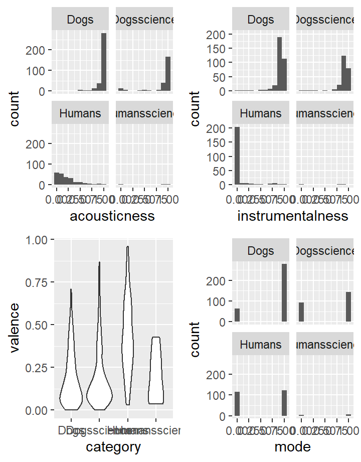
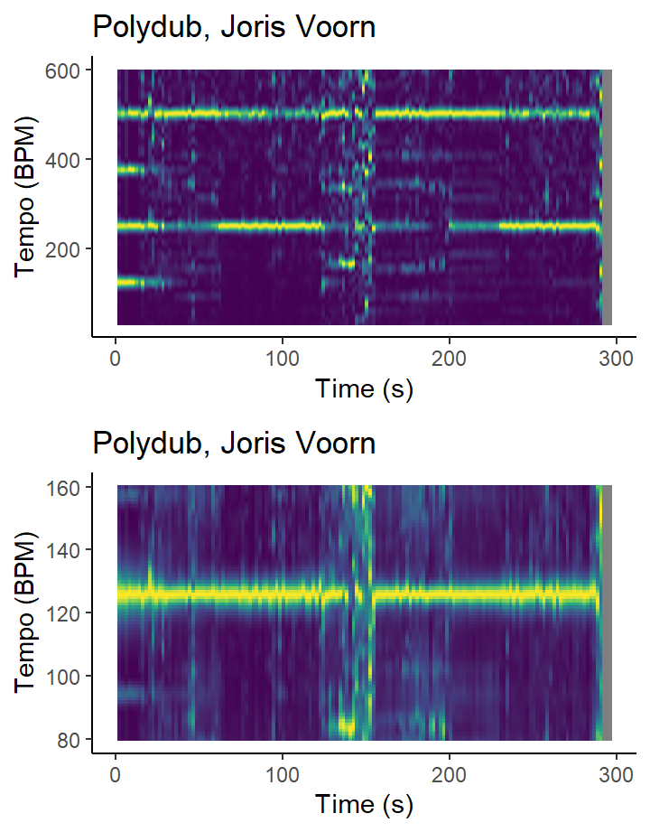
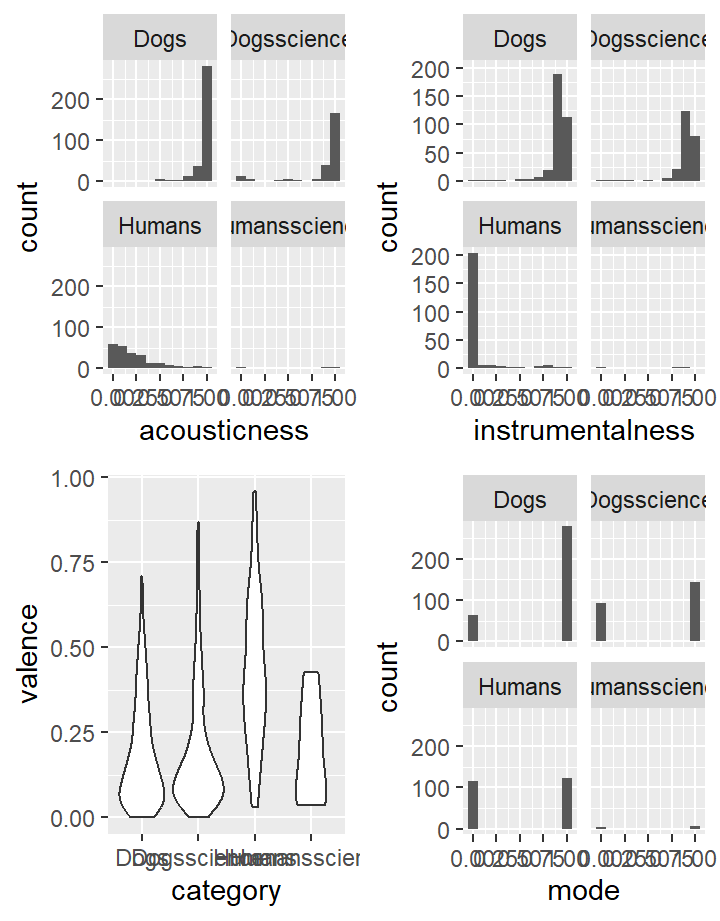
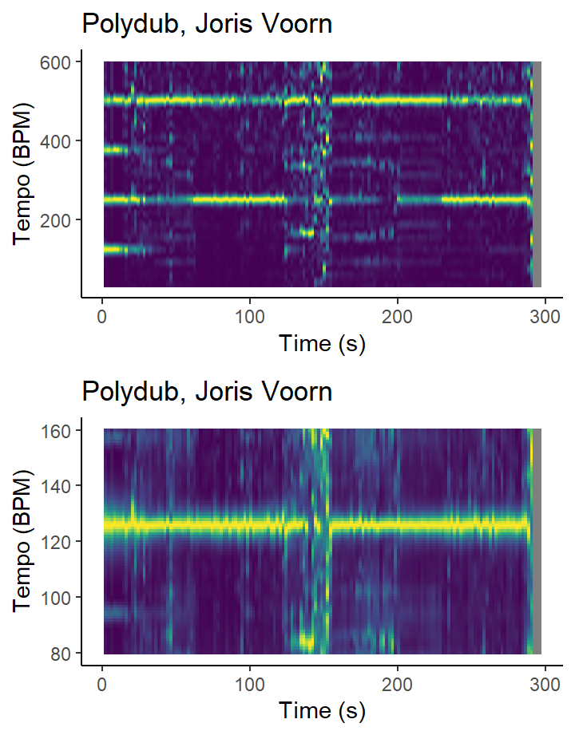


 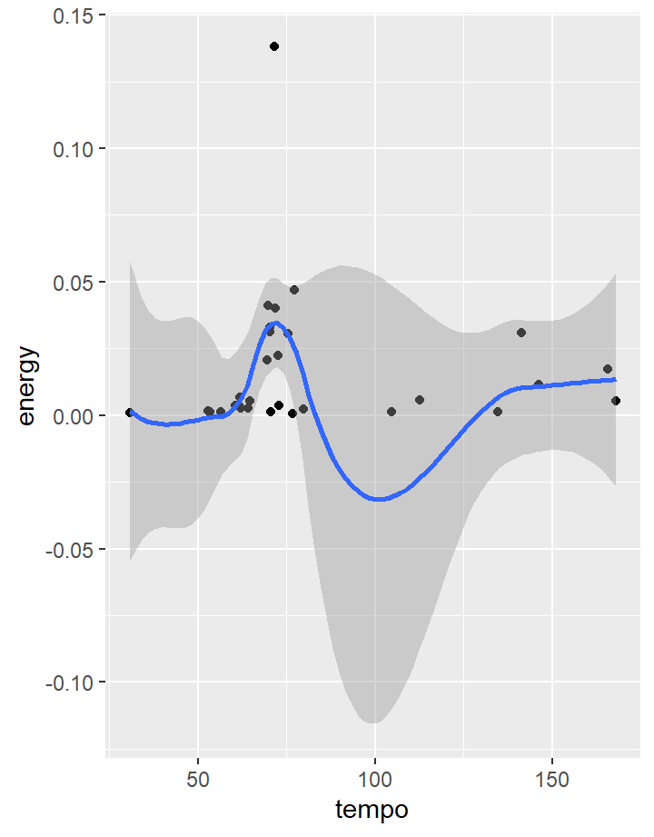
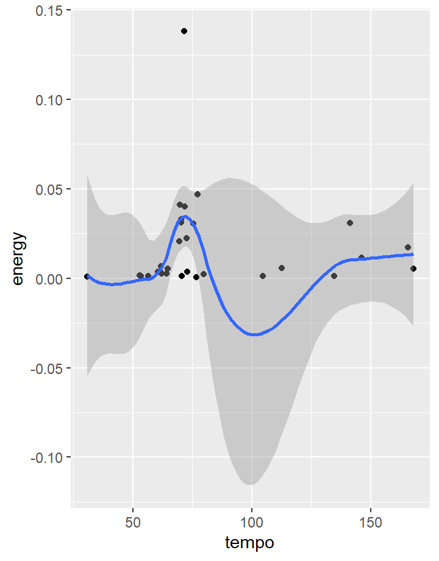


 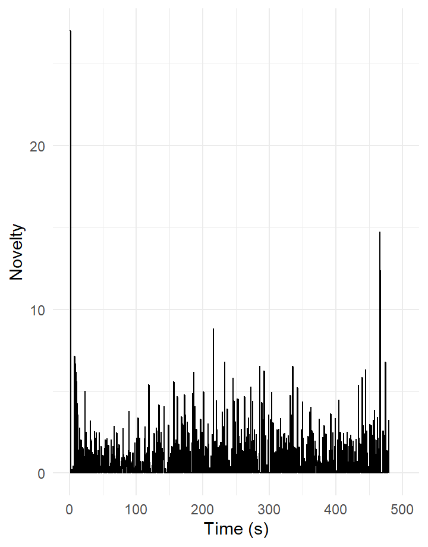
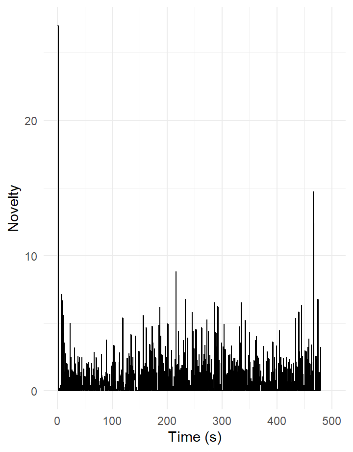


Tempograms and novelty - Homework week 11

When looking at this boxplot, it strikes me that only the playlist ‘dogs’ has a mean around 78 BPM and the other 3 playlists are higher, even the 2 ‘scientific’ ones. Also striking: the mean (and little SD) in the ‘Humans’ playlist around 120 BPM. I had expected for both science-based lists to have the tempo around 60-80 BPM (for synchronization purposes with humans and dogs rest heartrate) but no such thing; the dogsscience list even has a higher average than the regular dogs list.
When listening to the extreme outliers regarding tempo I can safely assume that the Spotify API isn’t working flawlessly: e.g. the ‘fastest’ song from the dogsscience playlist is “Chorale Prelude No. 5”Ach bleib bei uns Herr Jesu Christ” in B-Flat Major, BWV 649 (Harp Version)” and analysed at 200 BPM by Spotify: https://open.spotify.com/track/2Chgj5q0NgvBlFvzYVJvUa?si=5592371b98464c2d
The same applies to the tempo outlier “Leaves” (https://open.spotify.com/track/60YvUB0fCvLlTDCc99wpgD?si=5f3c0edf44fd4713) for the regular dogs playlist, clocked at 204 BPM. When listening it’s apparently wrong. It’s a piano-only piece of music with clearly some rubato-syle tempo changes.
Tempograms continued
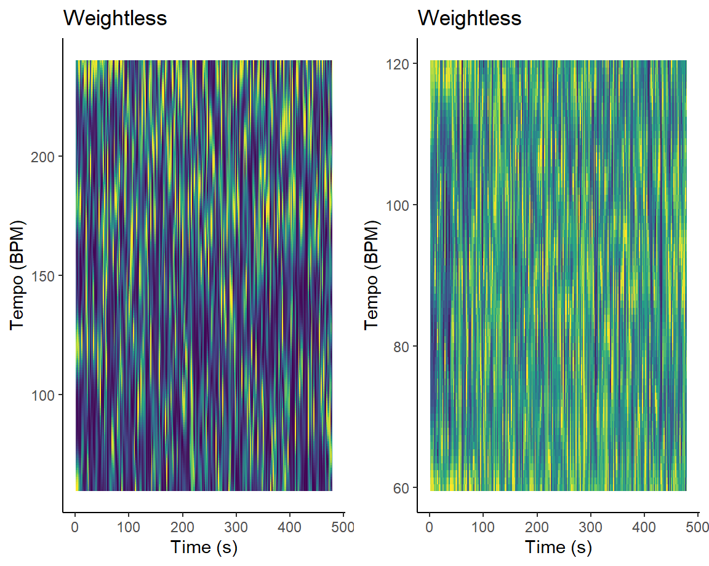
it’s difficult to assess any tempo-related aspects of this song, not least because (and this I know from the research that I looked at) the song Weightless is intendedly designed to start at 70 BPM and then -after some 5 minutes- slows down towards 60 BPM.
Tempograms continued extra week 11 (totally different genre)
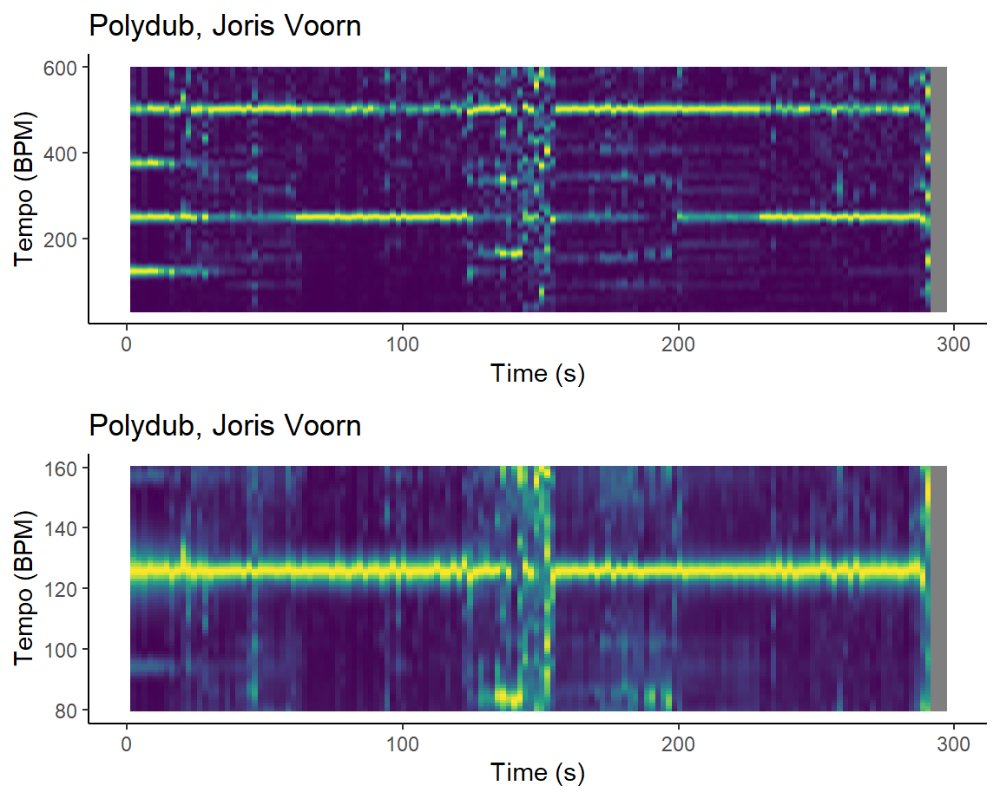
Just for fun I had a look at a song from a favorite Techno DJ of mine, Joris Voorn. The song is Polydub from album Four: https://open.spotify.com/track/7fqAVya5281BFkUokiXAAB?si=44ac45f5d6a94528
As can been seen very clearly: a typical 125 BPM style song.
Computational-Musicology - “It’s a dogs life”
This website describes my project for the course Computational Musicology in the third year of doing a Bachelors study Musicology at the University of Amsterdam (with a specialization in Music Cognition). The course deals with the use of computers as a tool for answering musicological questions.
My project has initially aimed to search for music playlists on Spotify with keywords ‘relax’, ‘relaxation’ or ‘calming’. Not only for humans but also -specifically- for dogs. There is a large quantity of music (artists, albums, playlists) available on Spotify with those keywords, also for dogs (and cats, jointly our most favorite pets to live with us, human beings).
I attempted to -first broadly- search, then self-assemble and -select, qualify, compare, and (deeply) analyze music (playlists and individual songs) on Spotify, specifically searching for similarities and/or differences in ‘calming/relaxing music’ for humans and for dogs.
The interest stems from my scientific curiosity into the emotional and behavioral effects of sounds (specifically musical sounds in this project) for humans and animals (dogs here!) alike. Not least because of my love for my own pet dog, Tess, a 3-year-old Toller Retriever (see photo right here where she is alert and active -which is great- but she needs her relax moments very much too!). Her well-being means the world to me and if we can understand the potential calming effects of sounds to dogs a bit better I hope this can assist in furthering the broad animal’s well-being policies and guidelines.
In the next tabs to the right, graphs and texts will provide insights into the various aspects that I dived into for this project. I hope you find it interesting to read!

Introduction to the analysis of music for this project, selected on Spotify with keywords ‘relax(ation)’/‘calming’
For this project I have analysed playlists on Spotify which are named either ‘calming’ or ‘relaxing’ or ‘relaxation’ and qualified, selected & grouped them (eventually after some further research) fourfold as follows:
- general relaxation playlist for humans
- general relaxation playlist for dogs
- specific relaxation playlist for humans, based upon scientific research
- specific relaxation playlist for dogs, based upon (some) scientific research
(all 4 are own-made playlists)
The overall corpus is made from songs on many playlists that exist for those groups. It is my working hypothesis that the first two groups are hardly different and that a high level of anthropomorphism is applicable => we assume that what humans define and perceive as relaxing music will be true for dogs also and hence group 2 is based on similar criteria/elements as for group 1.
Research has been done into calming/relaxing effects of music, both for humans as for dogs. For the first group, humans, we know much more given a broader spectrum of feedback: we have language as feedback system whereas with dogs we are limited to behavior and bodial aspects like blood pressure or hormone level measurements like cortisol, the ‘stress hormone’. With music for dogs, research shows that similar aspects towards calming apply as for humans (energy, loudness, pitch, instruments) but also differences (variety, genre, ’nature’sounds).
Group 3 and 4, defined on certain scientific research, may show significant differences with groups 1 and 2 on a variety of musical ‘elements’. Also between groups 3 and 4, I wanted to analyze similarities and -especially- search for differences. This was a key research goal for this project.
All but 1 (nr 3) playlists are large, i.e. > 200 songs each. Nr. 3 only contains 10 songs.
(’Elements” are aspects of music that Spotify allows for analysis as described on Spotify) e.g. loudness, tempo or mode (major or minor)
It might also be that ‘true’ calming music for dogs is based on musical elements that disqualify for humans as true music (i.e. pitches in sounds at frequency levels unhearable for humans but hearable for dogs. This is not in scope for this project, one reason being is that Spotify doesn’t contain (high-pitched) sounds that are non-perceivable for humans but that dogs CAN hear.
My 3d group is based upon research into the most relaxing (i.e. anxiety reducing) songs for humans: neuroscience on anxiety reduction with official playlist. I quote from this article “…participants listened to different songs while researchers measured brain activity as well as physiological states that included heart rate, blood pressure, and rate of breathing.” The song elected as nr 1 in a top 10 of most relaxing songs is “Weightless” by Marconi Union (a song which will be deeply analysed in the next tabs). I further quote: “Equally remarkable is the fact the song was actually constructed to do so. The group that created”Weightless”, Marconi Union, did so in collaboration with sound therapists. Its carefully arranged harmonies, rhythms, and bass lines help slow a listener’s heart rate, reduce blood pressure and lower levels of the stress hormone cortisol.” The group I created for this research is an exact copy of this top 10.
I based my fourth group, called on Spotify “Through a Dogs Ear, science-based supposedly” upon the following paper and the available public playlists in Spotify labeled (published by authors of this research). See “Through a Dogs Ear”. Also have a look at a review of Leeds work The emphasis of this research is very much on a concept called psycho- and bioacoustics I quote: “Psychoacoustics is the discipline that studies the perception of sound in humans. This includes how we listen, our psychological responses, and the physiological impact of music and sound on the human nervous system. Bioacoustics is the study of sound in animals. It looks at how animals communicate, as well as the positive and negative effects of sound in their environments.”
My expectations/assumptions about similarities and/or differences between these 4 groups in regards to the most important musical elements were roughly as follows:
- on Loudness, Energy and Danceability I expected all 4 groups to score low
- on Tempo I expected all groups to be largely in the 60-80 BPM range (as research shows that a musical beat that is close to our (and dogs) heartrate is assistfull to relaxation)
- on other elements like e.g. speechiness, instrumentalness or acousticness I didn’t formulate specific expectations beforehand (but was rather surprised with some differences between playlists)
- for the playlist 4 (dogs, science-based) I expected the aspect of ‘bioacoustics’ to be largely represented in the combined Spotify elements tempo, loudness, danceability and speechiness; it’s near-impossible to weigh the importance of each of these aspects although tempo seems to be a crucial element. Also I a curious to delve into timbre aspects of the dogs, science-based playlist to see if there are some common characteristics
The playlists used in Spotify:
Spotify playlist humans:
https://open.spotify.com/playlist/3B0FtfxNiFOo82o8lmJcIp?si=d6447cd190234b6a
Spotify playlist dogs:
https://open.spotify.com/playlist/5hQo2asoxqQrnJFeufycj1?si=565ef05c6ff24ae0
Spotify playlist humans scientific:
https://open.spotify.com/playlist/1t06IDDtn5eYo4Ow7Fwmcb?si=5d4a68e5d2334b34
Spotify playlist dogs scientific: here
(draft/garbage) A global analysis of 4 relaxation playlists: humans, dogs, ‘humansscience’ and ‘dogsscience’. Garbage and single variable oriented!!


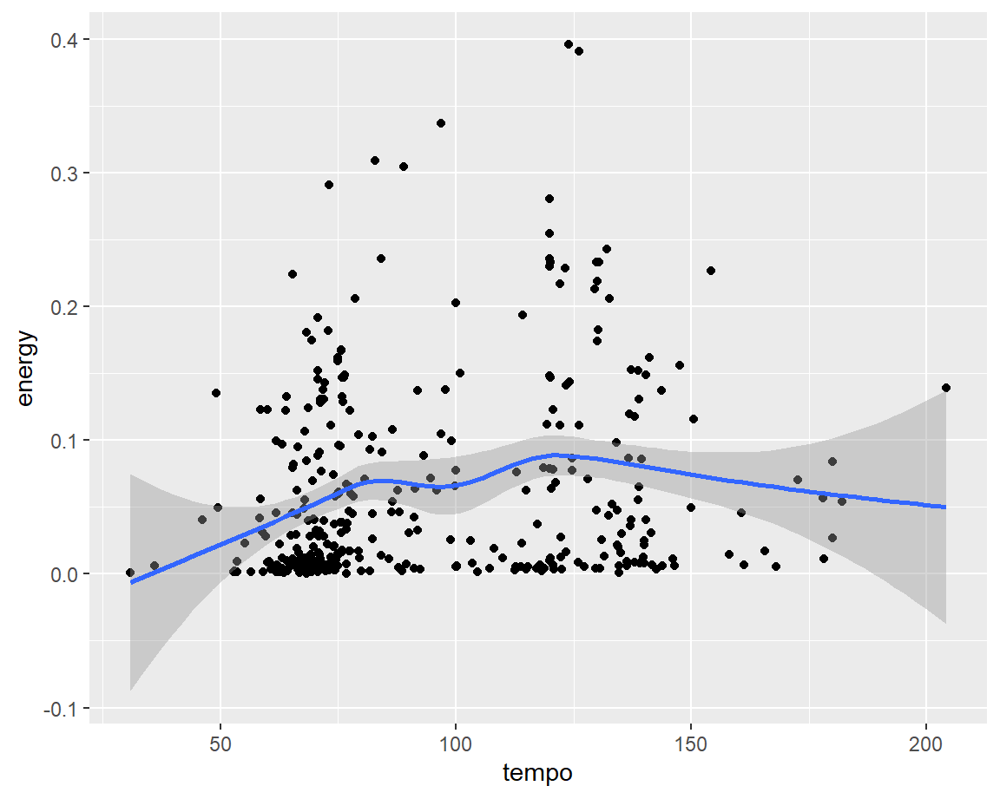


(N.B. at the moment this is still a garbage tab which requires clean-up)
I started the analysis with a comparison on single elements between the 4 groups
Analysis of 4 key variables combined over the 4 playlists
Comparing the 4 playlist on variables tempo (x) , energy (y), loudness (color) and danceability (size) as can be seen in the chart left, brings up some interesting and unexpected differences. As mentioned earlier (see Tab “Introduction…”), I expected a lot of similarity on tempo, energy, loudness and danceability (omitting speechiness here as variable). Much to my surprise, there are much bigger differences than I presumed.
Both dogs playlists score significantly lower on energy than the 2 human playlists. Bear in mind when comparing these graphs that the y axis (for energy) has a different scales foreach playlist which means that the differences are even more dramatic!
The same applies for loudness, where the human playlists score high (yellow) and the dogs playlists much lower (blue).
Tempo for humans centers around 120 BPM whereas for dogs it much more in the 60-80 BPM range.
On danceability also a difference can be seen (on average the dogs playlists have many more smaller cells) but not as big as with the other 3 variables.
What mostly struck me is the wide spread of the songs in the playlist humans, science-based accross these 4 variables. As these 10 songs - supposedly- form a top 10 of most relaxing song for humans (specifically: to relief anxiety and stress e.g. pre-surgery) why do they not score similarly or at least near to the nr 1. song on that list: Weightless by Marconi Union?
Analysis of a few songs in terms of chroma features (providing pitch class insights) and cepstograms

Following earlier analysis I proceeded with a few selected songs from the 2 science-based playlists to deeper analyse other aspects as provided by chromagrams
This tab explains the pitch-classes structure of the song “Weightless” from playlist 3, humans science as well from the song “Totally Beached”, an archetypical song in the playlist 4, dogs, science.
I selected the song “Weightless” by Marconi Union from group 3 (humans, science-based) upon this research into relaxing capabilities of music to lower axciety in humans (e.g. pre-surgery). This study concluded upon a top 10 list of most relaxing songs, with Weightless as nr 1.
Weightless is -intendedly- not a very energetic or (pitch/chords/beats/timbre) changing song, quite the opposite. When listening to it, I can hear the change to emphasis on D and A happening after exactly 89 seconds. Some, but very little, melodic aspects then come into play. Reason for this is, as explained by the researchers in their study, that -when trying to have humans relax to music- they want to minimize the brain activity related to predicting where the melody is developing to.
(possibly: more explanation to follow)
I selected the song “Totally beached” from the fourth group (dogs, science-based) for a further analysis because it has a strong reggae ‘vibe’ to it and certain research on the effect of music on calming dogs found that reggae music (together with soft rock) is a genre preferred by dogs.
Totally Beached is a relative short song, where in the chromagram I believe to see a clear reggae-style appearance of offbeat chord elements. The song follows a classic reggae chord development between I and IV (in this case G minor and C minor). What surprises me in the chrogram is a relative small prominence of Eb, the terts in C minor. The last 10 seconds are a fading-out stall of the applied instruments, hanging on to a single C-dominated finale.
Some further timbre analysis with cepstrograms

On the left here are 2 cepstrograms, aimed at providing insights into the different timbre aspects of music.
The cepstrogram on ‘Weightless’, the song elected as most relaxing for humans shows an enormous amount of c02 timbre elements, meaning a high level of brightness. (more analysis to follow)
For the second cepstrogram: first indications make me think that flatness is indeed high in Totally Beached (the song for dogs based on science). Also a relative high level of c04 which could relate to the relative sharp ‘attack’ style of the strumming guitar with reggae. (more analysis to follow)
Self-Similarity Matrices


Explanation to follow; for Weightless: the song is intendedly designed to lower the BPM
Homework for week 10, keys analysis
#{r, 1 single variable compared, homework week 10} combine4lists |> ggplot(aes(x = category, y = key)) + geom_boxplot() #
Homework week 10 continued (part 3): chordogram on keys {data-commentary-width=“500”}

Homework week 10 continued (Chordograms) {data-commentary-width=“500”}
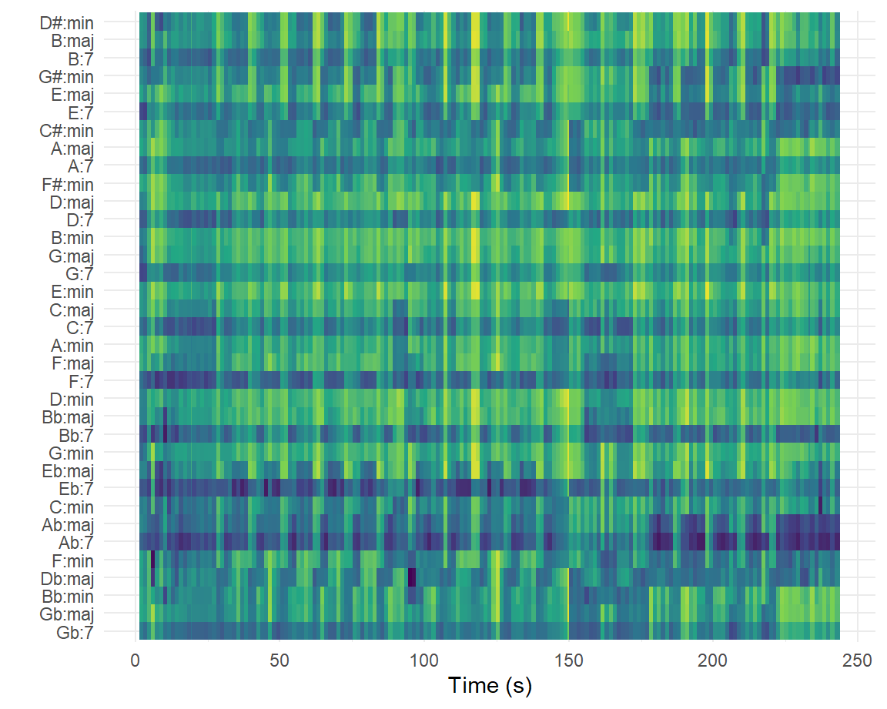
As most songs from all 4 playlists are -intendedly- not very ‘exciting’ in terms of a lot of musical elements (and their possible changes during a song) like tempo, energy, instrumentalness, etc. I decided to pick an outlier from playlist 3 (humansscience) which scores highest on tempo and relatively high on energy: Strawberry Swing by Coldplay, to see what happens chords-wise. A chordagram is presented here.
The song is in Ab (as tonica I) with mostly changes to IV (Db) and V (Eb). This is a rather ‘normal’ chords progression. The black spot around 95 seconds in Db appears to me the emphasis/power on Db (as ‘tension’ dominant to Ab) just before ‘releasing’ to tonica Ab (‘home’/stability). The same ‘returned home’ energy on Ab can been seen in the last 80 seconds of the song. As G# enharmonically is the same as Ab, it is no surprise that there’s relative a lot of energy in there too. There’s also a prominance to be seen in seventh chords, a usual patterns in chordagrams as explained by our lector: ‘leakage’ of energy in the 7th ‘bin’ (close to the 1st tonica) plays a role here sometimes).
Homework week 10 continued (part 3): timbre comparison between 2 playlists (humans science and dogs science) {data-commentary-width=“500”}

Homework week 10 continued (part 4): timbre comparison between 2 playlists (dogs and dogs science) {data-commentary-width=“500”}

Homework week 10 continued (part 4): loudness comparison between 2 playlists (dogs and dogs science) {data-commentary-width=“500”}

KEY ANALYSIS
A remarkable (in my opinion) similarity on keys between the groups, the mean in 3 out of 4 groups on key 5, which is F. Only “humansscience” has F# as mean. I find it very remarkable that the key of C (nr. 1), one would expect an often used key, is completely missing in these boxplots. Further to be analysed.
Analysis on chordograms to follow HERE:
As expected, an emphasis on I, IV and V prominence for a song in Ab. Interesting:a lot of dark blue in C# (enharmonically the same as Db). With knowledge of Western chords and their relationships (tonica, subdominant, dominant and others) I expected that the software would ‘know’ - in the context of this piece of music; circle of fifths!- that Db strongly ‘belongs’ to Ab and C# not really.
ON CEPSTOGRAMS:
At first sight, no c02 or c03 scores for the humans science groups, that’s…remarkable. A handicap of this comparison is that the playlist human science only contains 10 songs. But still, the absence of c02 and c03 is remarkable. In the next tab I will analyse two larger groups, dogs and dogs science.
No major differences are to be seen here between these 2 groups in terms of Timbres except perhaps that categories c06-c10 produces higher scores for Dogs Science.
LOUDNESS COMPARISON: well, at least produced a graph….now for some analysis…:)
Concluding remarks
DRAFT, bulletpoint like remarks:
dogs playlist more strictly based on criteria for ‘true’ relaxation (e.g. tempo around 60-80; low energy); the definition for humans relaxation seems, even for the science-based list, more loosely formulated
I don’t see the aspect of variation in the playlist dogs, science-based whereas this is mentioned in research as an important aspect for the desired effect (calming of dogs)
the Spotify API doesn’t fully work flawlessly, some musical elements are clearly wrong analysis and put in a data figure. Which means: listen often to the songs!
the playlist humans science is based on a scientifically selected set of 10 most relaxing songs (with the aim of anxiety relief, e.g. pre-surgery). Yet, I find this list in terms of musical aspects like e.g. tempo, energy and speechiness not very well suited for true relaxation; I believe the definition of ‘relaxation’ for this group, as well as for the general playlist humans is less strict than the definition for the 2 playlists for dogs. The latter 2 are more strictly designed to calm (in terms of heartrate, blood pressure, etc.)
the bioacoustic aspects that research (partly leading to my 4th group dogs scientific) into calming effects of sounds to dogs have not been analysed. Spotify doesn’t provide Nor does Spotify generate music above (but IN for dogs) the hearing frequency spectrum for humans
the aspect of variations in music for dogs, to counter boredom, as described in [this research] as an important factor